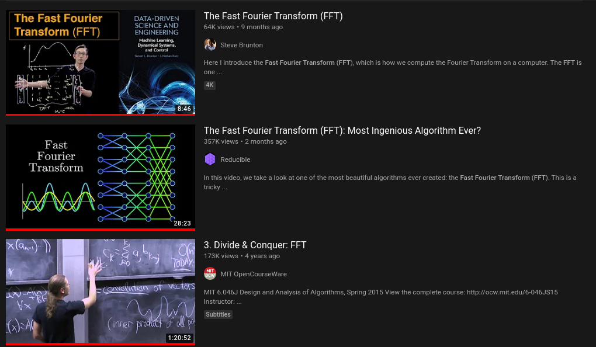
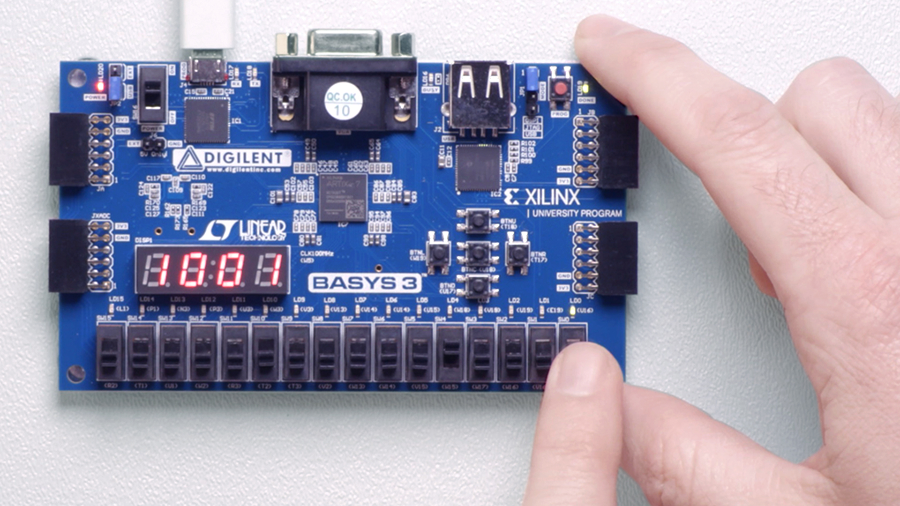

FFT
Fast Fourier Transform

I have nothing to add 🤷♂️
I have nothing to add 🤷♂️
I have nothing to add 🤷♂️
I have nothing something to
add 🚀
Plan
- Motivation
- Preliminaries
- History
- Definition
- Implmentation
- Applications
Motivation
Why do we need FFT?
A fast alorithms to calculate the DFT
Why do we need to calculate the DFT?
- Control Theory
- DSP
- Convolution
- CV
PLL
PLL
Phase-locked Loop
Phase-locked Loop

Phase-locked Loop
Just imagine a world without DFT
Just imagine a world without DFT The whole Fourier family

Preliminaries
Why do we need FFT?
A fast alorithms to calculate the DFT
When we talk about algorithm performance
The metric is the Ο notaion
The big Ο Notation
The size(N) response of the algorithm
The scalability of the algorithm
Just an abstarct benchmark to determine which algorithm is better
Scalability
All computer problems are either
- CPU bound
- memeory bound
- IO bound
Scalability
All computer problems are either
- CPU bound -> time complexity
- memeory bound -> sapce complexity
- IO bound
What units? 😕
All computer problems are either
- CPU bound -> years
- memeory bound -> Kg
- IO bound
different Complexities

Assumptions about the abstrat machine
- Single-threaded
- All ALU operations takes constatnt time(but might differ for different operations)
- Its word length is big enough(yet limited) to address all the memory locations used to represent our problem, plus an extra percentage for our variables.
Simple evaluation Technique

Formal Evaluatoin Technique
Usually through recurrence relations

Fancy algorithms are slow when n is small, and n is usually small- Rob Pike
FFT is one of those fancy algorithms
- The time complexity for calculating the DFT is \[Ο({n^{2}})\]
- But the the some of FFT magic it becomes \[Ο({n\log{n}})\]
aka, Divide & Conquer
A basic rule of mathematical life: if the universe hands you a hard problem, try to solve an easier one instead, and hope the simple version is close enough to the original problem that the universe doesn’t object.- Jordan Ellenberg, How Not To Be Wrong
Bonus
Have you ever heard of dynamic programming?
Yes, that mathematical technique which has nothing to with programming and it's not that dynamic
Bonus
Dynamic progamming is a superset of divide & conquer
History
Principal Discoveries of Efficient Methods of Computing the DFT

Is it invented or discovered?
Is it(math) invented or discovered?
Principal Discoveries of Efficient Methods of Computing the DFT
Only until 1965 to publish it as standalone!